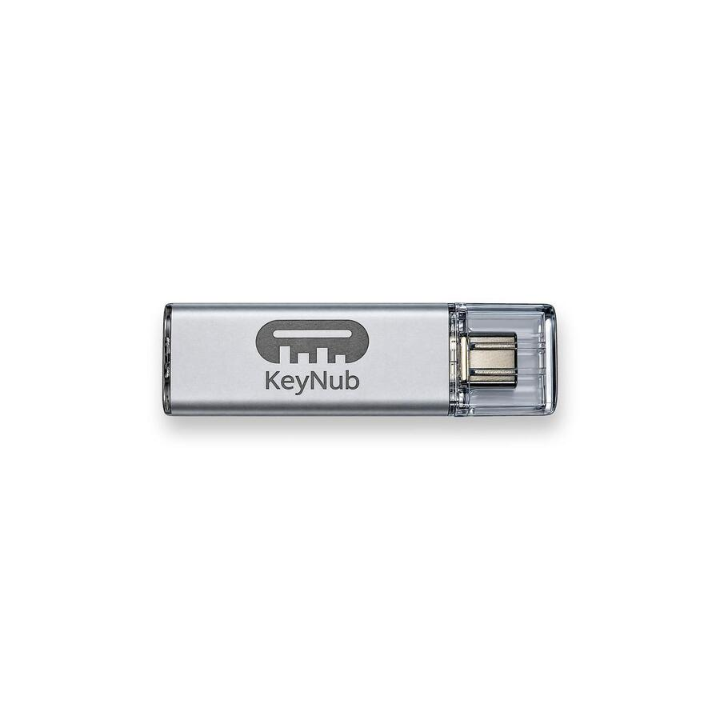
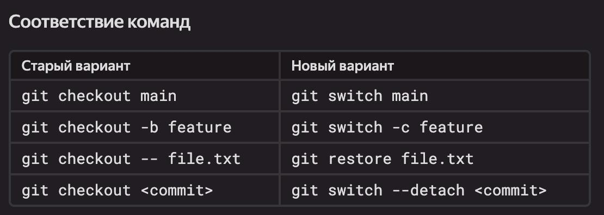
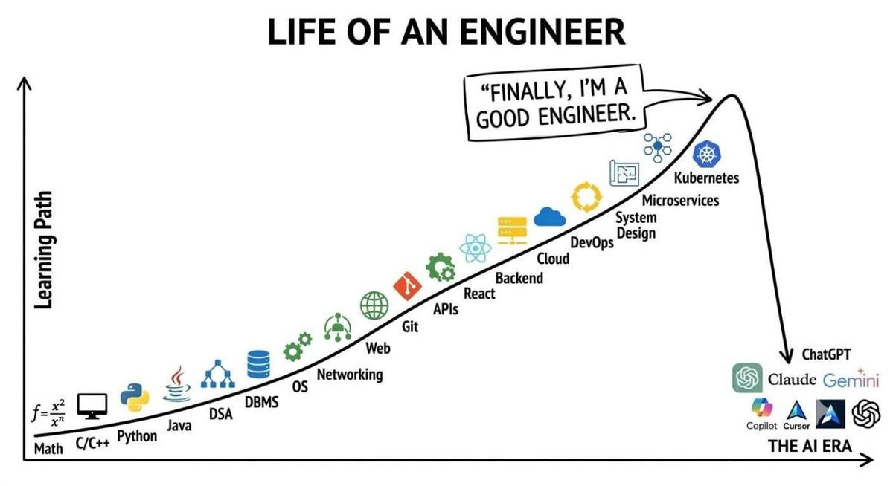
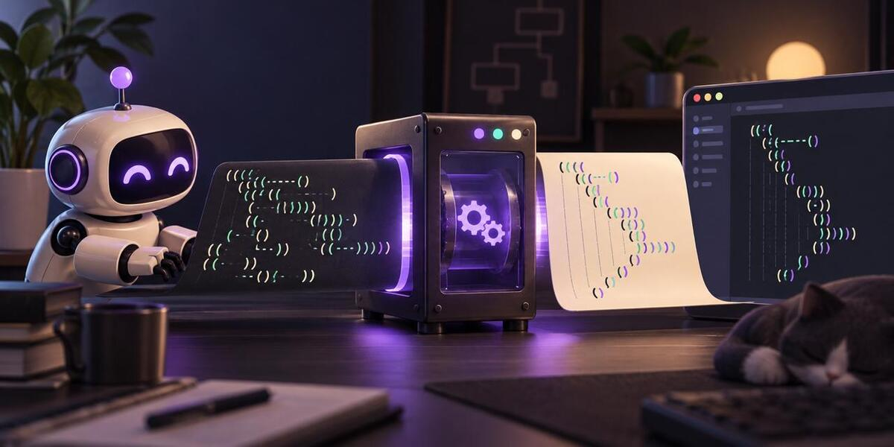
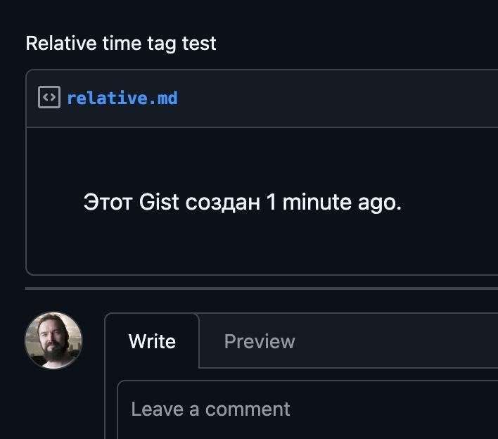
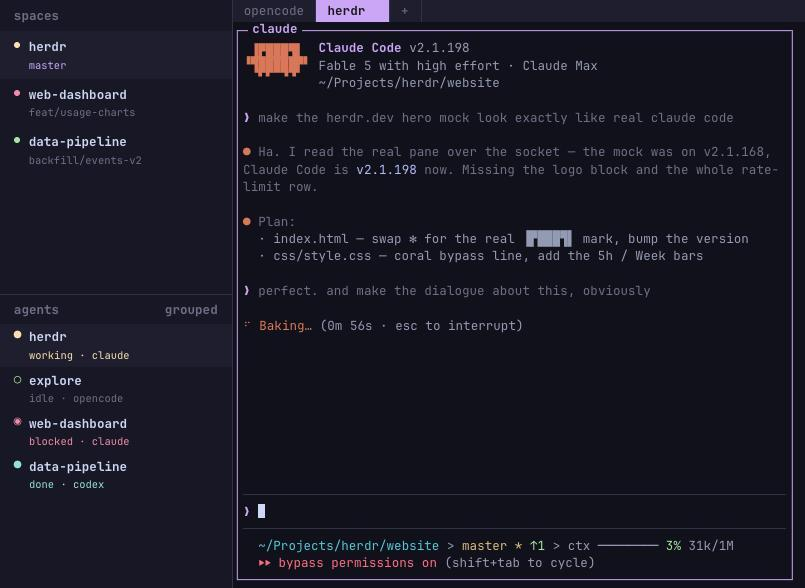
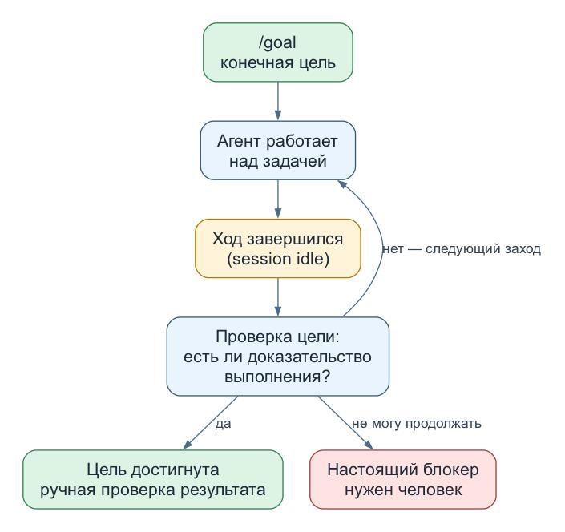

Страница 1
Common Lisp & Hardware Security
posted on 2026-10-04

Сегодня наткнулся на ещё одно интересное применение Common Lisp — SDK KeyNub для работы с аппаратным USB-ключом. Такой ключ хранит лицензию и нужен для использования коммерческого ПО. Получается, что можно на Common Lisp писать софт, для использования которого потребуется такой вот hardware-ключ.
Как не открыть лишний порт на сервере
posted on 2026-09-26
Сегодня возился с настройкой сервисов умного дома на Raspberry Pi. На таких машинках постоянно что-нибудь меняется: устанавливаешь новое ПО, обновляешь старое, правишь конфиги, пробуешь очередной сервис. И в какой-то момент хочется убедиться, что после всех этих изменений наружу не стал смотреть какой-нибудь неожиданный порт.
Узнал про git switch
posted on 2026-09-24

Наблюдая за нейронками, за тем, как они работают, порой узнаёшь для себя что-нибудь новенькое, какой-нибудь приёмчик, который каким-то образом прошёл мимо тебя.
Конец эпохи программирования
posted on 2026-09-18

Вот эту картинку я сегодня стырил в одном из каналов. Не смог не перепостить, потому что последние пару дней именно такие ощущения меня преследуют - что ушла целая эпоха. Раньше ты мог считать себя программистом на C++, Python или JS, а теперь мы все просто макаки, перекладывающие промпты.
В чём сложность форматирования кода на Lisp?
posted on 2026-09-16

В нынешние времена, когда большую часть кода пишут LLM, особенно остро встаёт проблема форматирования. Нейронки часто с этим косячат — особенно с отступами. В идеале перед коммитом они должны одной командой приводить все изменённые файлы к принятому в проекте формату.
Мой сетап с Atomic Spec и Beads
posted on 2026-09-15
В одном из предыдущих постов я писал о том, что такое Atomic Spec. А в одном из последних проектов настроил упряжь так, чтобы скиллы Atomic Spec работали вместе со скиллами Beads.
Отсчет времени в разметке на GitHub
posted on 2026-09-05

Недавно исследовал, как выглядят комментарии Codex в pull request на GitHub. В некоторых из них увидел время, показывающее, как давно агент сделал ревью. Сначала подумал, что это какая-то обычная часть интерфейса GitHub, но оказалось — нет.
Herdr вместо tmux для работы с несколькими AI-агентами
posted on 2026-08-31

У меня обычно одновременно запущено несколько AI-агентов: один что-то пишет в одном проекте, другой разбирается с багом в другом, третий ждёт, пока я отвечу на вопрос. Раньше для этого я поднимал tmux-сессии.
Собираюсь на AI Native Conf
posted on 2026-08-29
В октябре собираюсь пойти на AI Native Conf. Интересно посмотреть, что сейчас происходит вокруг разработки с AI и агентами, и послушать доклады людей, которые это всё уже пробуют в реальных проектах.
Залупливание кодового ассистента
posted on 2026-08-19

На днях мне понадобилось добавить в 40ants-bots поддержку клиента мессенджера MAX. Раньше библиотека работала только с Telegram, а теперь хочется уметь поддерживать разные мессенджеры.
Created with passion by 40Ants